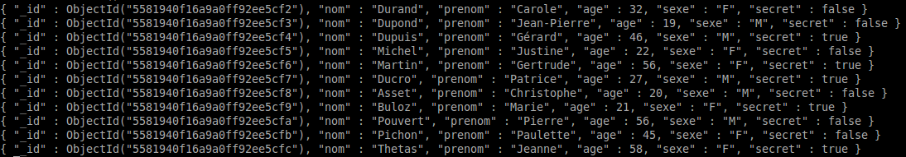

Stocker des données sous forme de tableau d'objets JSON dans le fichier "serveur.js" ne peut pas être une solution sur le long terme. Il est préférable d'utiliser une base de données. Si la notion de base de données vous est inconnue, il est impératif que vous étudiez les activités que vous trouverez ici avant de pouvoir continuer.
Nous allons (re)mettre en place la collection que nous avons déjà utilisée dans l'activité 4 (voir ici) de "l'initiation aux bases de données".
Après avoir téléchargé le fichier fi.json, vous devrez utiliser la commande suivante (à utiliser dans une console) afin de peupler la collection "fiches" de la base de données "maDB".
mongoimport -d maDB -c fiches --file fi.json --jsonArray
Attention à la position du fichier "fi.json" dans votre arborescence. Ici, le fichier "fi.json" se trouve dans le répertoire courant.
Pour savoir si tout s'est bien passé, ouvrez une console mongoDB, connectez-vous à la base de données "maDB" et faites un "find" pour la collection "fiches"
Vous devriez alors obtenir ceci :
Créez une nouvelle application
Avant de pouvoir utiliser mongoDB dans un programme nodeJS, il faut installer le "driver mongoDB" (ce driver (pilote) est un programme qui permet à nodeJS de communiquer directement avec la base de données). Placez-vous dans le répertoire de votre nouvelle application (en théorie "express_a8_2") puis, toujours dans la console tapez :
npm install mongodb
Pour savoir si l'installation s'est bien passée, vérifiez la présence du dossier "mongodb" dans le dossier "node_modules"
Saisissez, étudiez et testez cet exemple
index.html
<!doctype html>
<html lang="fr">
<head>
<meta charset="UTF-8">
<title>Ajax</title>
<script src="lib/jquery-2.1.4.min.js"></script>
<script src="javascript/script.js"></script>
</head>
<body>
<button>Afficher la liste</button>
<div id="liste"></div>
</body>
</html>
script.js
$(function(){
$('button').on('click',function(){
$.ajax({
type :'GET',
url : '/api/affiche',
success : function(data){
$('#liste').html('');
$('#liste').append('<h1>Liste des adhérents</h1>');
for (var i=0;i<data.length;i++){
$('#liste').append('<h3>Fiche n° : '+(i+1)+'</h3>');
$('#liste').append('<p>Nom : '+data[i].nom+'</p>');
$('#liste').append('<p>Prénom : '+data[i].prenom+'</p>');
$('#liste').append('<p>Age : '+data[i].age+'</p>');
$('#liste').append('<p>Genre : '+data[i].sexe+'</p>');
$('#liste').append('<br>');
}
}
})
});
});
serveur.js
var tab=[];
var express = require('express');
var app = express();
var MongoClient = require('mongodb').MongoClient;
app.use('/javascript', express.static(__dirname + '/javascript'));
app.use('/lib', express.static(__dirname + '/lib'));
MongoClient.connect("mongodb://localhost:27017/maDB", function(err, db) {
if(!err) {
console.log("Connexion à maDB : OK");
}
db.collection('fiches').find().toArray(function(err, items) {
tab=items;
});
});
app.get('/', function (req, res) {
res.sendFile(__dirname + '/html/index.html');
});
app.get('/api/affiche/', function(req, res) {
res.json(tab);
});
app.listen(8080);
Quelques explications :
L'exemple du "À faire vous-même 8.2" ressemble énormément à l'application développée dans le "À faire vous-même 5.1". Dans l'activité 5, les données étaient rangées dans un tableau qui se trouvait au début du fichier "serveur.js". Ici, les données sont issues d'une base de données mongoDB.
Passons en revue le code nécessaire à l'utilisation des données stockées dans la base de données :
var MongoClient = require('mongodb').MongoClient;
Cette ligne est indispensable si vous voulez vous connecter à une base mongoDB. Nous créons un objet "MongoClient" qui sera utilisé un plus bas dans le code.
MongoClient.connect("mongodb://localhost:27017/maDB", function(err, db) {
if(!err) {
console.log("Connexion à maDB : OK");
}
db.collection('fiches').find().toArray(function(err, items) {
tab=items;
});
});
Nous avons ici une structure un peu complexe. Nous avons plusieurs fonctions de callback imbriquées.
MongoClient.connect("mongodb://localhost:27017/maDB", function(err, db) {.....}
La méthode "connect" de l'objet "MongoClient" prend 2 paramètres :
Voici le contenu de cette fonction de callback :
if(!err) {
console.log("Connexion à maDB : OK");
}
db.collection('fiches').find().toArray(function(err, items) {
tab=items;
});
Le "if" teste s'il y a eu une erreur pendant la connexion à la base de données "maDB", si aucune erreur n'a été détectée, le message "Connexion à maDB : OK" est affiché dans la console.
db.collection('fiches').find().toArray(function(err, items) {
tab=items;
});
Vous remarquerez sans doute que "db.collection('fiches').find()..." ressemble beaucoup à une requête "find" effectuée dans la console mongoDB (db.fiches.find()...). Vous aurez donc compris que c'est ici que nous effectuons notre requête.
Nous avons une méthode "toArray" qui permet d'avoir le résultat de la requête sous forme de tableau d'objets JSON. Cette méthode prend en paramètre une fonction de callback (fonction appelée une fois la requête effectuée).
La fonction de callback prend 2 paramètres : err (que nous n'utilisons pas ici) et items (qui correspond au résultat de la requête, c'est-à-dire à un tableau contenant nos documents JSON).
Cette fonction de callback nous permet de recopier le tableau "items" dans le tableau "tab" (le tableau "tab" a été défini quelques lignes au-dessus). C'est ce tableau "tab" qui sera retourné par le serveur (requête Ajax) : "res.json(tab);"
Il est tout à fait possible, comme dans la console mongoDB de passer des paramètres à la méthode "find()"
Créez une nouvelle application qui sera identique à l'application développée dans le "À faire vous-même 8.2" à une exception près : remplacer le "find()" par un "find({age:{$lt:40}})"
Vérifiez que le résultat est correct.
Reprenez l'application développée dans le "À faire vous-même 8.3" et testez toutes les requêtes proposées dans les activités 5 et 6 de la série d'activités "Initiation aux bases de données". Vérifiez à chaque fois que le résultat est correct.
Comme vous pouvez le constater, si vous avez bien compris les requêtes vues dans la série d'activités "Initiation aux bases de données", vous n'aurez aucune difficulté à effectuer des requêtes dans un programme nodeJS.
Il est aussi possible d'utiliser "findOne()" à la place de "find()".
Créez une nouvelle application en faisant un copier-coller de l'application créée dans le "À faire vous-même 8.4" et remplacez :
db.collection('fiches').find().toArray(function(err, items) {
tab=items;
});
par
db.collection('fiches').findOne({},function(err, item) {
tab=item;
});
Nous avons maintenant une méthode "findOne" qui prend 2 paramètres :
Attention, si vous modifiez uniquement cette partie du code, cela ne va pas fonctionner. À vous de trouver les autres parties à modifier (le fichier "script.js" aura aussi besoin de modifications). Pour vous aider : le paramètre "item" de la fonction de callback n'est plus ici un tableau de documents JSON, mais un seul document JSON (c'est le principe de "findOne")